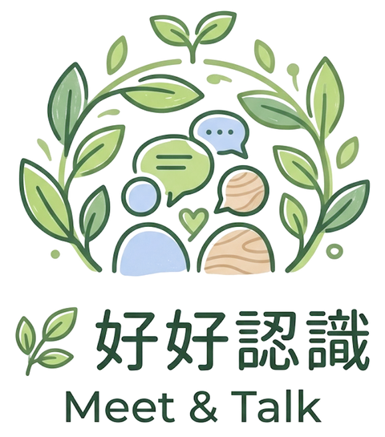

好好認識｜Meet & Talk

認識彼此的對話卡
連線中…
✦ 輸入玩家名字 ✦
☕
✕
🌿
✕
＋ 新增玩家
這一局想聊多久？
輕鬆聊
18 張 · 約 30 分
標準
30 張 · 約 60 分
盡興
45 張 · 90 分以上
每局從卡池抽出不同的卡，玩過的會優先換新。
開始前的三個小約定
每題都可以 pass
——這是邀請，不是考試
這裡說的，留在這裡
——讓每個人都安心
多問一句
——卡片上的「💬 接著問」幫你接話
開始抽卡 ✦
🌤️
破冰
🔍
深聊
💚
交心
✦ 隨機模式 · 所有關卡混合 ✦
🗂 換關卡
🎲 隨機
📡 開房間
現在輪到
—
☕
🌱
點擊抽牌
MEET & TALK
↺ 重新開始
🔍
第二關解鎖
深聊
進入下一關 →
🌿
謝謝你們，好好地聊了一場
聊完天之後，我們常常
低估了對方有多喜歡自己。
— 喜歡落差 The Liking Gap（Boothby 等人，2018）
↺ 再玩一次
✦ 姊妹作 · 想兩個人聊得更深嗎 ✦
36 個讓彼此相愛的問題
源自心理學家 Arthur Aron 的經典研究——36 個由淺入深的問題，讓兩個人在一小時內快速拉近距離。
前往遊玩 →
✦ 選擇關卡 ✦
🌤️
破冰
🔍
深聊
💚
交心
取消
✦ 觀看房間 ✦
請大家用手機相機掃描 QR code，
就能同步看到每一張抽出的卡。
🔗 複製連結
✕ 關閉房間
收起
#01
破冰
🌱
💬 接著問
🧠 心理學
💡 為什麼問